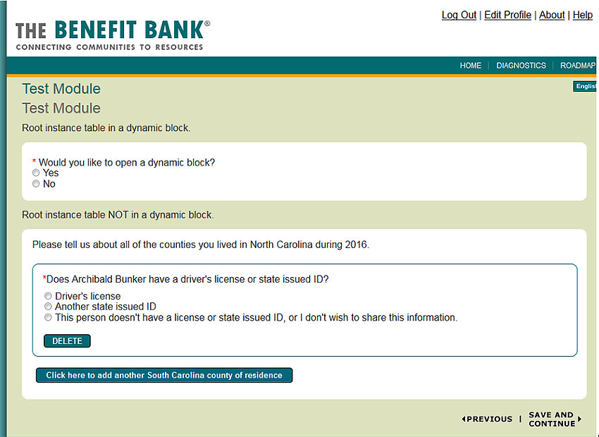
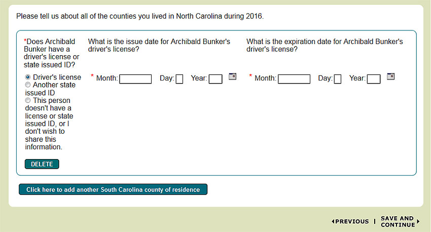
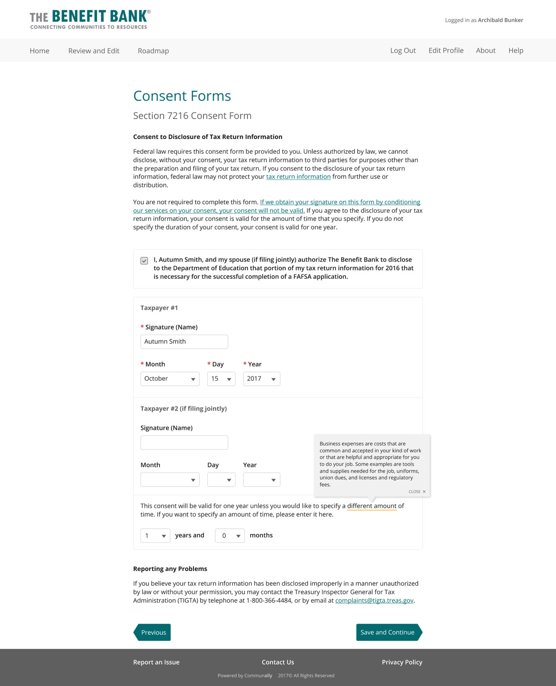

The Benefit Bank is an online service that offers tax filing, benefits application filing, and benefits eligibility screening. It operates in both self-serve and counselor-assisted platforms.
The outer shell of TBB had been made responsive, but now it was time to tackle the difficult part- the actual application process. Because of time restraints, we wouldn't be able to completely redesign the application, but we could spruce it up a bit and make it slightly less painful to use on smaller screen sizes. The project was affectionately deemed "the paint job".
Most of the application system was built using HTML tables, before all of the modern CSS layout options were widely adopted. We wouldn't be able to go in and rip the tables out at the time, because of the complicated templating system in place. Save for a few select modules that were used almost unchanged throughout most of TBB's application processes, we had to keep essentially the same layout for most pages, but we could tweak things like colors, font styles, etc.
We also wouldn't be able to take a look at each of the hundreds of pages separately. Instead, we just payed special attention to each type of page element (headers, question groups, etc) and did our best to make nice looking lego blocks that would fit together beautifully in the end.
Looking at what was the current application system, I was particularily concerned with the confusing visual heirarchy and spacing users had to grapple with. TBB's goal is to make filing for benefits simple and easy, and while the system offers hints and help to guide the user through the process, the design of many of the pages threatented to counteract that.
A quick look at the style previously used for TBB
An example of the table-based layout affecting readability
I knew I wanted to tighten up the visual heirarchy and to make the design more consistent with the rest of TBB. Using some patterns established from earlier TBB responsive projects, I got to work.
First, I went through the an application myself and took note of all of the different elements I could find. I created mockups showing how the elements would come together to create full pages.
The TBB paint job at a glance
As mentioned, for most of the application pages, we couldn't change the layout. For pages like that, I created two mockups, which together covered most of the elements users would come across while filling out their application. These two mockups served as the paint job's foundation.
A hodgepodge of common page elements used in TBB
I used this existing page as an example since it contained most of the common elements
I focused on making sure the spacing between elements made it easy to understand which elements are related to one another. I used subtle borders to separate elements as well.
There are some pages that we were able to focus specifically on, since they were either standalone pages or are used in most of TBB's applications. We could aford to take a bit more time examining these pages since they're so heavily used.
Roadmap: before & after
The roadmap is the first page a user lands on when they start their application, and each time they complete a section. It shows each section of the application, and allows the user to navigate between them.
We took out the text at the top of each roadmap. On smaller screens, that text would take up way too much real estate. The user would have to scroll past it each time they complete a section. Plus, most of that text appears elsewhere before the user enters the application.
Household Information: before & after
The household information page appears in almost every application, and provides a summary of the information the user provides about their household.
Instead of the tables, I thought a modular approach might be better, especially for mobile users. Each household member would get their own "pod" instead of table row. I tried the same thing for the information block below- less table, more pod.
The paint job launched just in time for tax season, the busiest time of the year for TBB. Its debut garnered positive feedback from users all around the country, who appreciated the modernized look and feel.